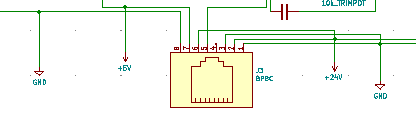

15-Igniter Sequencer
Overview
The intent of this board is to apply 12 Vdc power to 1 talon firework igniter every two seconds, for a total of 15 igniters. It accomplishes this with one N-channel MOSFET transistor controlling ignition power for each igniter queue, based on a 5v logic input at the transistor gate. The gate of each transistor is activated in sequence through the use of a 16-channel multiplexer, and a CD4060 timer/counter. Logic power (5V) and Igniter power (12V) are both supplied through a single RJ-45 connector. When logic power is applied, the timer counter will begin counting at zero, and count up every 2 seconds. The 4 least significant bits of the counter are connected to the selection pins of the multiplexer, which enables activation of each transistor, in sequence.
The timer/counter
A CD4060 timer counter is used to count from 0 to 15 on a 4-bit output (pins Q4 - Q7). The RC circuit created on pins 9, 10, and 11 results in the counter incrementing at an interval of 1.84 seconds. A potentiometer (RV1) in that same circuit enables adjustment of this interval up to 3.68 seconds. The .33uF capacitor connected to the reset pin enables an auto power-on reset, to ensure that the counter begins at 0. The reset pin is otherwise pulled to ground through a 10k resistor. Output Q8 (when the counter reaches 16), activates the disable function of the multiplexer.
The multiplexer
The first 15 of the 16 output pins of the multiplexer are connected to the gates of the 15 transistors controlling igniter power. The select pins are driven by a 4-bit incrementing counter that counts from 0 to 15. The disable pin (15) is pulled to ground through a 10k resistor, but is activated when the counter reaches 16 (technically while the counter is between the ranges of 16 through 31). The common signal pin is tied to Vcc through a 270 Ohm resistor that will limit the current applied through the multiplexer to the transistor gates.
Igniter connections and transistors
Igniters will be connected to the board with 3 10-position spring-loaded terminal blocks. One wire of the igniter will be connected to 12 Vdc. The other end of the igniter wire will be connected to the drain pin of a transistor. The source pin of that transistor is connected direct to ground. The gate of the transistor is pulled to ground through a 10k resistor, and is driven by one of the output pins of the multiplexer.
Power and signal interface
An RJ-45 connector will provide logic power, and igniter power to the board from off-board sources. One of the pins of the RJ-45 connector is connected to Q8 of the counter, and is driven high when the counter reaches a value of 16. The intent is to provide for off-board indication of this sequencer completing its full cycle through the 15 igniters. Igniter power is supplied over 2 pairs of wires (pins 1 and 3 provide 12v, and pins 2 and 6 are GND).

Example Board Layout